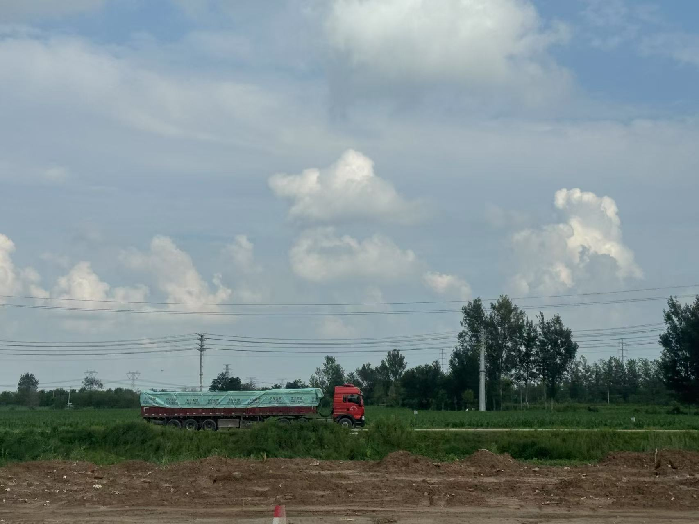
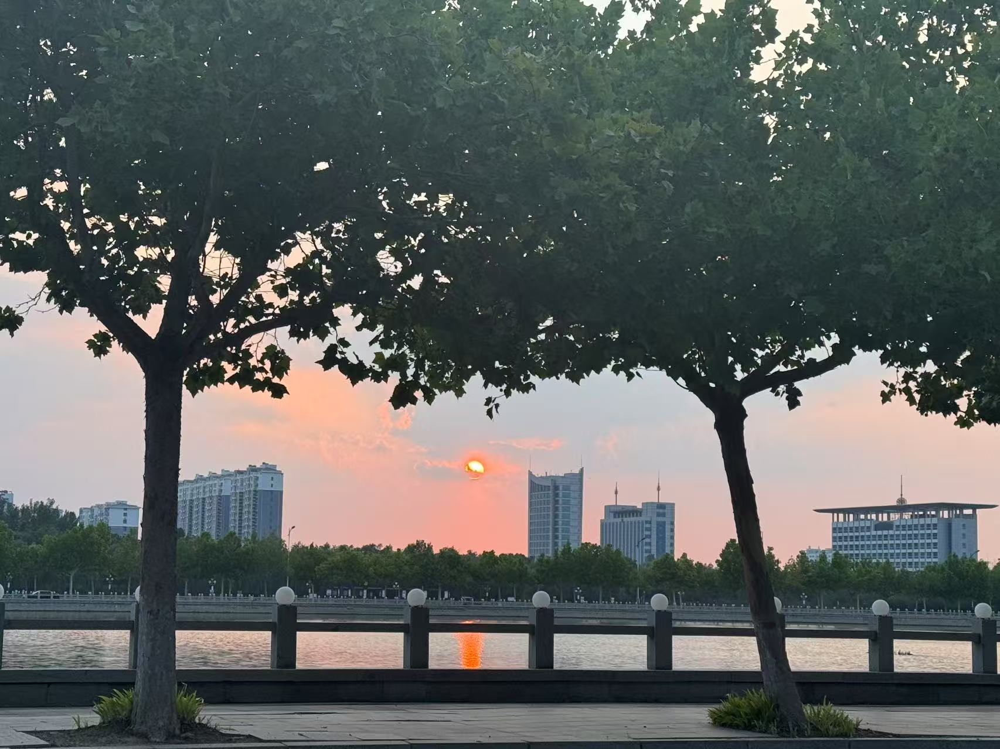
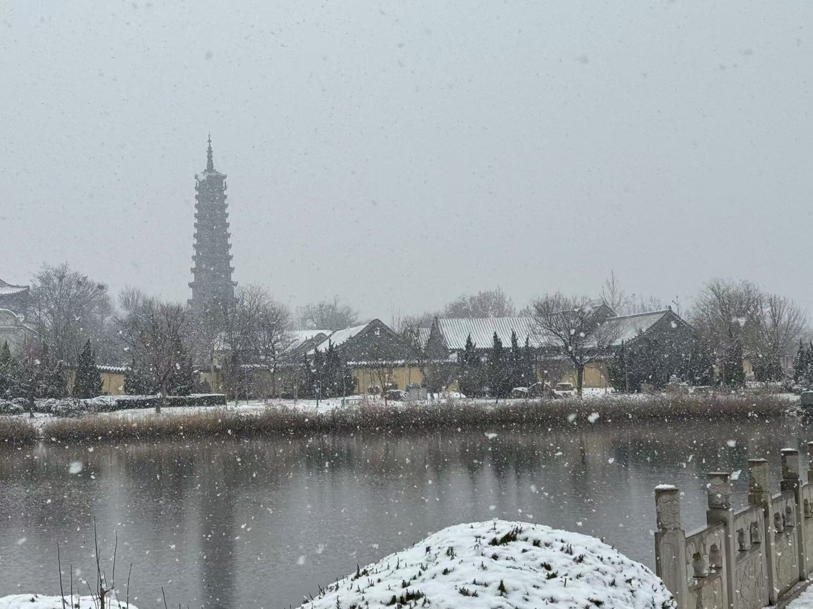
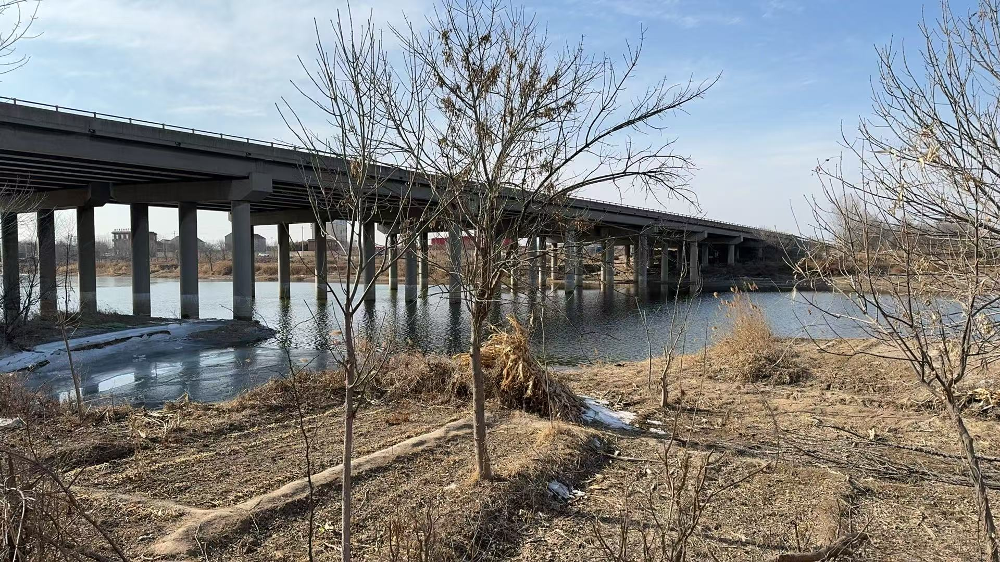
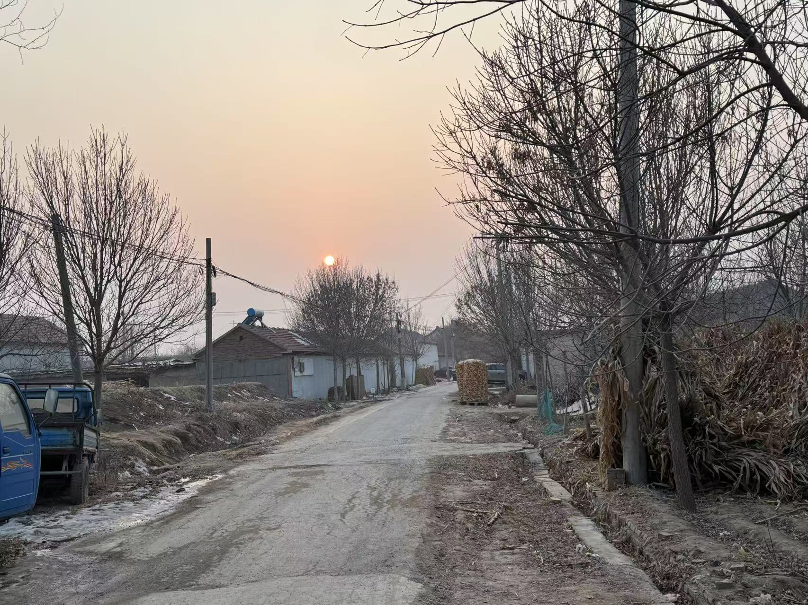

李舒畅和她家
个人简介
- 姓名：李舒畅
- 性别：女
- 年龄:20
- 籍贯：山东滨州
- 联系方式：scli2005@163.com
- 兴趣爱好：吃好吃的、旅行、晒太阳、看书、看电影、睡觉、和朋友一起玩游戏
山东省滨州市
- 地理位置与自然环境:
滨州市地处黄河下游，渤海湾西南岸，北通渤海，东临东营市，南连淄博市，西与德州市接壤。全市总面积约9600平方公里，横跨黄河两岸，地势南高北低，气候属温带季风气候，四季分明，雨热同期。滨州拥有丰富的自然资源，黄河穿城而过，沿海滩涂地区是重要的原盐生产基地，年产量达160多万吨。此外，滨州还是胜利油田的主产区之一，石油和天然气储量丰富。
地理位置详细信息请点击（山东省天地图）
- 历史文化：
滨州是黄河文化和齐文化的发祥地之一，孕育了众多历史名人，如兵圣孙武、北宋名相范仲淹、清代帝师杜受田等。滨州的文化遗产丰富多彩，拥有黄河文化、孙子文化、齐文化、红色文化、吕剧文化等多元文化交融的特色，拥有博兴吕剧、阳信鼓子秧歌、惠民胡集书会等民俗非遗项目。
- 经济发展：
滨州是山东省重要的工业城市，拥有高端铝业、精细化工、智能纺织、食品加工、畜牧水产五大千亿级产业集群。2024年，滨州的工业总产值突破万亿，多项产品产量和市场占有率位居全国乃至全球第一。（我们那最有名的民营企业叫魏桥）
- 旅游景点：
滨州是“中国优秀旅游城市”，旅游资源丰富，四季皆景。主要景点包括：
- 孙子故里：兵圣孙武的故乡，文化底蕴深厚；
- 黄河三角洲生态文化旅游区：以湿地景观和生态保护为特色;
- 鹤伴山国家森林公园：以自然风光和森林氧吧著称；
- 魏氏庄园：清代民居建筑的代表。
更多旅游景点请点击（滨州市十大景点）
- 特色美食：
- 锅子饼（强推，肉的素的都好吃）
- 馒头夹火腿（无棣县特色、强推）
- 大山烧鸡（有点咸）
- 虾酱（超级咸，炒鸡蛋好吃一点，能吃咸直接蘸着吃，螃蟹酱也是）
- 乔庄水煎包（香！）
- 对虾（新鲜的对虾煮起来甜甜的，很好吃）
- 青阳炒鸡（麻辣鲜香）
更多美食请点击（抖音搜索滨州特色美食）
- 以下是独家照片(均在滨州市无棣县拍摄)




